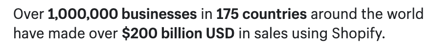
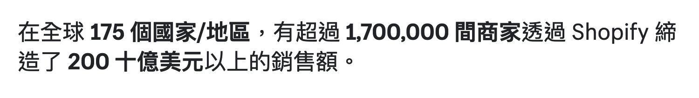
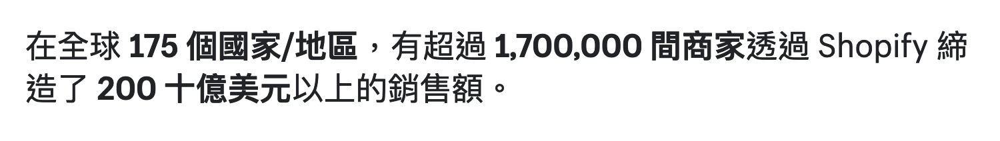
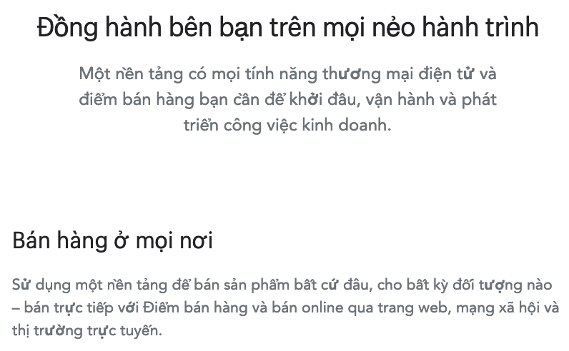

i18n at Shopify 🧐
🦖🦕
“What would happen if we translated this blog in a number of main languages like German, French, Spanish, and then Italian, Brazilian-Portuguese and then Japanese?”
–Someone from Growth…
Domain? Locale? Language?
Language: A system of communication used by a particular country or community
Script: A visual representation of verbal speech
Domain: An easy-to-remember address used to access websites
Locale: A set of language- or country-based preferences for a user interface
Shopify.com has 6 CJK domains, which comprise of 3 languages and 4 writing scripts
- [2017-Apr] Japan (/jp, formerly known as www.shopify.jp)
- [2020-Mar] Taiwan (/tw, formerly known as www.shopify.tw)
- [2020-May] Korea (/kr, formerly known as www.shopify.co.kr)
- [2020-Sep] Chinese Intl (/zh, formerly known as zh.shopify.com)
- [2020-Sep] Hong Kong (/hk, formerly known as www.shopify.hk)
- [2021-Jan] China (still and will probably always be www.shopify.cn)
The “Billion” problem
The Chinese numeral system (also used by Japanese and Korean) has specific words for large numbers as per the traditional Chinese grouping of 10,000.
| Simp. Chinese | Trad. Chinese | Japanese | Korean | |
|---|---|---|---|---|
| 10 | 十 (shí) | 十 | 十 (juu) | 십 (ship) |
| 100 | 百 (bǎi) | 百 | 百 (hyaku) | 백 (baek) |
| 1000 | 千 (qiān) | 千 | 千 (sen) | 천 (cheon) |
| 10,000 | 万 (wàn) | 万 | 万 (man) | 만 (man) |
| 100,000,000 | 亿 (yì) | 億 | 億 (ichioku) | 억 (eok) |
| 1,000,000,000,000* | 兆 (zhào) | 兆 | 兆 (icchou) | 조 (jo) |
What translators see
Not this:
But this:
Over %{total_stores} businesses in %{total_countries} countries around the world have made over $%{total_gmv_billions} billion USD in sales using ShopifyThe end result
 


The problem
We were literally saying our GMV is 200 ten million dollars, which is kind of a glaring grammatical error.
But why didn't Japan have this problem? 🤯

The Japanese team had worked around this issue previously by editing the locale files that reference our total GMV numbers like so:
%{total_gmv_billions}0億米ドルOur Japan team spotted this error and made the adjustment of replacing 十 with a 0.
See solution, steal it
This will be how it looks for each respective language:
%{total_gmv_billions}0억 달러(USD)
%{total_gmv_billions}0 亿美元
%{total_gmv_billions}0 億美元Lessons and best practices
- Interpolate with caution
- Do Not Manually Construct Sentences or Manipulate Text in Code
- Let i18n Libraries Handle the Hard Stuff
Lessons From Linguistics: i18n Best Practices for Front-End Developers by Lucas Huang
Shopify Sans
Shopify Sans was designed by Commercial Type and based on their typeface, Graphik.
(We actually do not own it outright because of that)

The Vietnamese alphabets are listed in several non-contiguous Unicode ranges:
- Basic Latin {U+0000..U+007F}
- Latin-1 Supplement {U+0080..U+00FF}
- Latin Extended-A, -B {U+0100..U+024F}
- Latin Extended Additional {U+1E00..U+1EFF}
- Combining Diacritical Marks {U+0300.. U+036F}
- The Vietnamese đồng currency symbol is ₫ (U+20AB)
Missing Vietnamese glyphs (now fixed)
The :lang() pseudo-class
:lang(vi) {
font-family: -apple-system, BlinkMacSystemFont, sans-serif;
}
Korean typographic issues (now fixed)


Korean typographic fixes
:lang(ko) {
font-family: ShopifySans, -apple-system, BlinkMacSystemFont, sans-serif;
[class*='heading--'] {
word-break: keep-all;
}
}Links
谢谢
감사합니다
ありがとう ございます
Cảm ơn
🙇🏻